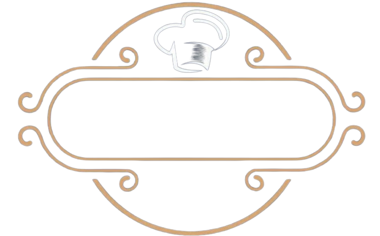
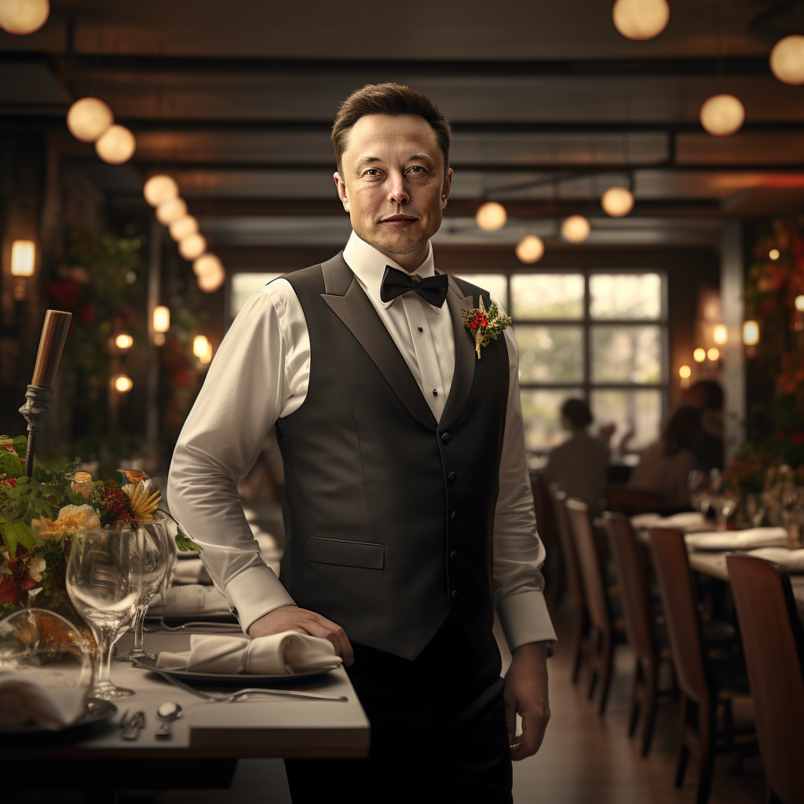
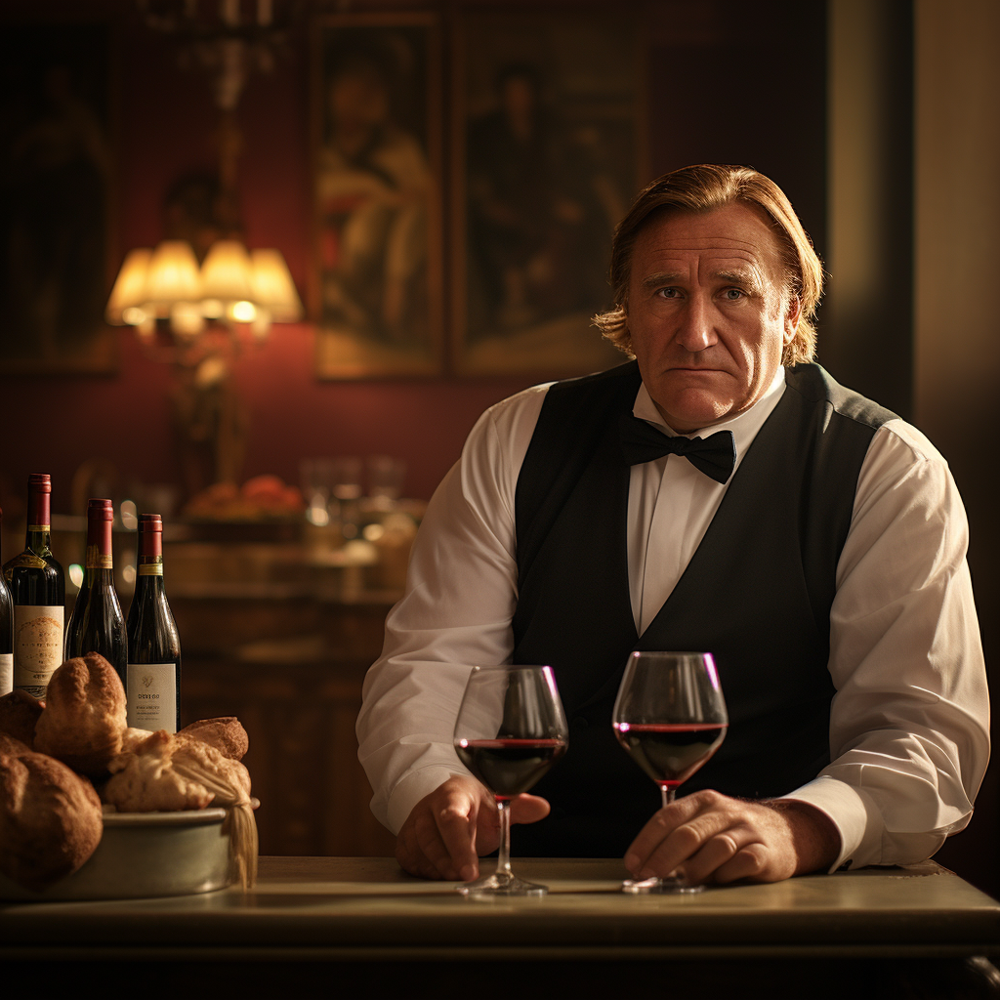

« Le ROMERY fait rimer originalité avec générosité, sur la base de beaux produits du terroir. répertoire
lyonnais revisité, ou pure création : chaque menu propose une variation gourmande dans une ambiance feutrée.
Nouveauté : la table d’hôte de quatre convives située en cuisine, au coeur de l’action ! »
Guide Michelin, 2023

Niché au cœur de la vibrante Lyon, ROMERY n'est pas simplement un restaurant : c'est une expérience
culinaire
innovante, une symbiose audacieuse entre le dynamisme du fast food et la finesse de la haute gastronomie
présenté
par notre chef Donald Crampe. Dans notre établissement, chaque détail est méticuleusement pensé, du
design élégant
et luxueux de notre local à la qualité incomparable de chaque ingrédient que nous sélectionnons.
Bienvenue dans la Fastronomie.

L'expérience ROMERY ne s'arrête pas à l'assiette. Notre local, par sa conception moderne et luxueuse,
offre un cadre éblouissant qui complète parfaitement notre philosophie culinaire. Lorsque vous
franchissez nos portes, vous êtes immédiatement accueilli et enveloppé dans un cocon d'élégance
contemporaine par notre maître d’hôtel, Elon Musque, où chaque élément, des lustres étincelants aux
finitions méticuleuses, témoigne de notre engagement à offrir le summum du luxe.

Au-delà de cette rencontre gastronomique, Gérard de la Part Dieu, notre sommelier émérite, ajoute une
autre dimension à l’expérience ROMERY. Ayant sillonné les vignobles de France et d’ailleurs, Gérard
possède une connaissance encyclopédique des vins et sait, avec précision, comment mettre en valeur
chacun de nos plats à travers une sélection vinicole. Son expertise et sa passion pour les accords
parfaits enrichissent l'expérience culinaire et introduisent nos clients à des joyaux œnologiques
parfois méconnus.